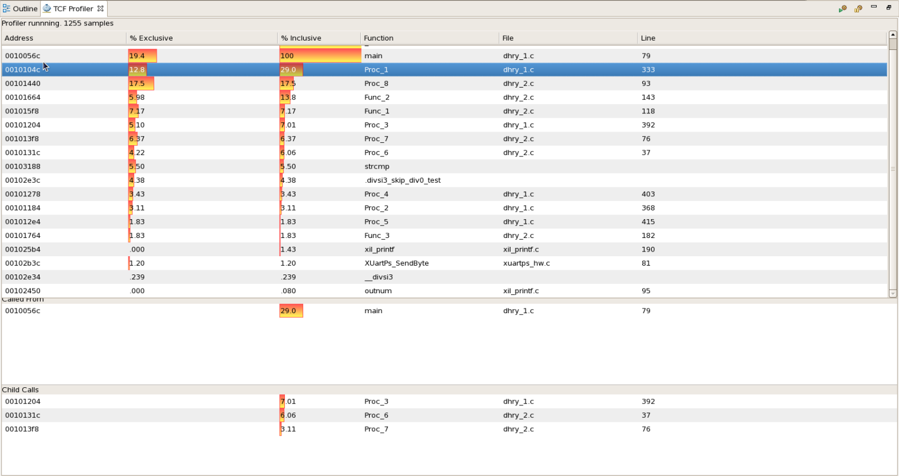

TCF profiler supports profiling of both standalone and Linux applications. TCF profiling doesn’t require any additional compiler flags to be set while building the application. Profiling standalone applications over Jtag is based on sampling the Program Counter through debug interface. It doesn’t alter the program execution flow and is non-intrusive when stack trace is not enabled. When stack trace is enabled, program execution speed decreases as the debugger has to collect stack trace information.
- Select the application you want to profile.
- Select Run > Debug As > Launch on Hardware (System Debugger).
- When the application stops at main, open the TCF profiler view by
selecting Window > Show View > Other > Debug > TCF Profiler.

-
Click the
 button to start profiling.
button to start profiling.
The
Profiler Configuration dialog box appears.

-
Select the Aggregate Per Function option, to group all the samples collected for different addresses in a single function together. When the option is disabled, the samples collected are shown as per the address.
-
Select the Enable stack tracing option, to show the stack trace for each address in the sample data. To view the stack trace for an address, click on that address entry in the profiler view.
-
Specify the Max stack frames count for the maximum number of frames that are shown in the stack trace view.
-
Specify the View update interval for the time interval (in milliseconds) the TCF profiler view is updated with the new results. Please note that this is different from the interval at which the profile samples are collected.
- Resume your application. The profiler view will be updated with the data as shown the figure below
